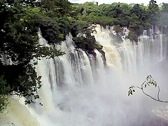
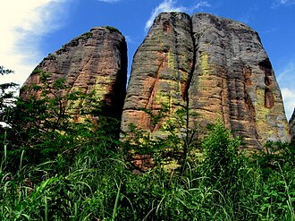
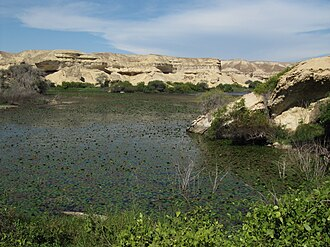
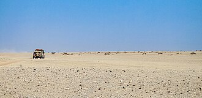
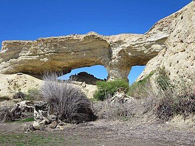
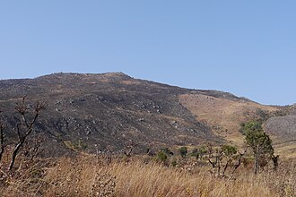
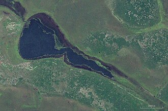
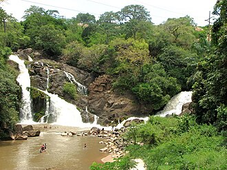
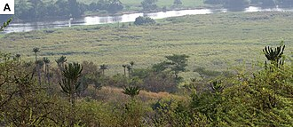

Natureza e paisagens de Angola
26 lugares de natureza em Angola: quedas de água, serras, lagoas, florestas e parques.
Na página de cada lugar: horário, preço em Kwanza (quando conhecido), como chegar, as fontes e a data de verificação. Horários e preços mudam: confirme antes de ir.
Luanda
-

Miradouro da Lua
Falésias coloridas a 40 km de Luanda, mais bonitas ao pôr do sol.
Foto: Paulo César Santos · CC0
.jpg){kind=link}
Malanje
-

Quedas de Kalandula
Quedas de água com 105 m de altura e 400 m de largura.
Foto: Zorglub · CC BY-SA 3.0
-

Pedras Negras de Pungo Andongo
Rochedos gigantes ligados à história da Rainha Njinga.
Foto: Paulo César Santos · CC0
-
Parque Nacional da Cangandala
O parque da palanca negra gigante, símbolo de Angola.


Namibe
-

-

Parque Nacional do Iona
O maior e mais antigo parque nacional de Angola.
Foto: Edward Middleton · CC BY-SA 4.0
-

Lagoa dos Arcos
Lagoas no deserto com arcos naturais de pedra.
Foto: David Stanley from Nanaimo, Canada · CC BY 2.0


.jpg){kind=link}
Cuando
-
Parque Nacional do Luengue-Luiana
Parque no sudeste, com o primeiro acampamento de safari.
-
Parque Nacional de Mavinga
Rios e savana no sudeste, com guias experientes.
Huambo
-

Morro do Môco
O ponto mais alto de Angola, com 2620 metros.
Foto: Benjamin Stauch (Wikischaaf (talk)) · CC0
-
Monte Satchinongue
Miradouro sobre o Huambo.

Huíla
-

-

Fenda da Tundavala
Precipício de 1200 m com vista até à planície do Namibe.
Foto: tim kubacki · CC BY 2.0


Moxico Leste
-

-
Parque Nacional da Cameia
Planícies que alagam e florestas de miombo, no leste.

Bengo
-
Lagoas do Bengo
Lagoas entre plantações, a norte de Luanda.
Benguela
-
Colina da Saudade
Miradouro sobre o Lobito.
Bié
-
Quedas do Cuemba
Quedas de água rodeadas de verde, no Bié.
Cabinda
-
Floresta do Maiombe
Floresta tropical com enorme biodiversidade.
Cuanza Norte
-
Jardim Botânico do Kilombo
O único jardim botânico de Angola.
Cuanza Sul
-


Cubango
-
Ilha da Liapeca
Ilha no rio Cuebe, para piqueniques perto de Menongue.
Icolo e Bengo
-

Parque Nacional da Quiçama
Safaris junto ao rio Kwanza, a sul de Luanda.
Foto: Nielsen SV, Conradie W, Ceríaco LMP, Bauer AM, Heinicke MP, · CC BY 4.0

Lunda Norte
-
Lagoa Carumbo
Lagoa da Lunda Norte, uma das 7 Maravilhas Naturais.
Lunda Sul
-
Quedas do Rio Chiumbe
Quedas de água na Lunda Sul, uma das 7 Maravilhas Naturais.
Uíge
-
Grutas do Nzenzo
Grutas na floresta do Uíge, uma das 7 Maravilhas Naturais.
Mais guias
- Agenda de eventos
- O que fazer em Luanda
- Restaurantes, bares e discotecas em Luanda
- Centros comerciais em Luanda
- Desporto e ginásios em Luanda
- O que fazer em Benguela e no Lobito
- O que fazer no Lubango e na Huíla
- O que fazer no Huambo
- O que fazer em Cabinda
- O que fazer no Namibe (Moçâmedes)
- O que fazer em Malanje
- Praias de Angola
- Parques nacionais de Angola
- Museus de Angola
- Hotéis e alojamento em Angola
- Transportes em Angola: aeroportos, comboios e autocarros
- Casas de câmbio em Angola
Nature and landscapes of Angola
26 nature spots in Angola: waterfalls, mountains, lagoons, forests and parks. Each place page has opening hours, prices in Kwanza and directions. The Tuende app is available in Portuguese, English, French and Spanish.